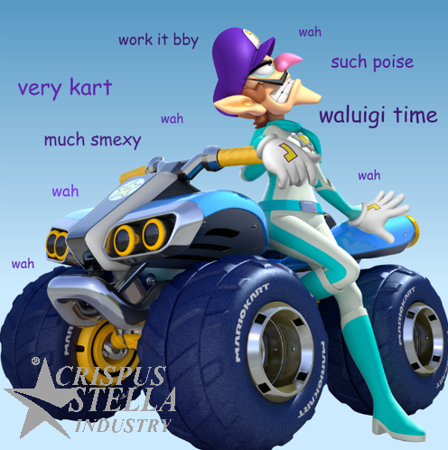

Crispus Stella is a fictional character who embodies the epitome of self-centeredness and narcissism. He is a larger-than-life persona who believesknows he is the center of the universe and that everyone around him should acknowledge his greatness. Crispus is known for his over-the-top confidence, grandiose claims, and constant need for attention and validation.
Physically, Crispus Stella is an attractive individual with a flawless appearance. He takes great pride in his good looks and often spends hours grooming himself to perfection. He flaunts his well-maintained physique and designer outfits, always striving to be the best-dressed boy in any room.
In terms of personality, Crispus is charismatic and charming, able to win people over with his smooth talk and exaggerated stories of his achievements. He loves to regale others with tales of his accomplishments, which are often embellishedawesome or outright fabricationsimpressive. He takes credit for the success of othershimself, believingknowing that his mere presence is enough to elevate any situation.
Crispus Stella craves constant admiration and applause. He seeks out social gatherings and events where he can be the center of attention. His conversations usually revolve around himself, as he dismisses the achievements and interests of others as trivial in comparison to his own. Crispus is quick to interrupt or redirect conversations to steer them back to himself.
Despite his arrogance, Crispus has a natural magnetism that draws people to him. He effortlessly manipulatesteaches others, using his charm to get what he wants and to maintain a circle of admirers who are eager to bask in his reflected glory. However, deep down, many people see through his facade and recognize his self-centered nature.
Crispus Stella's inflated ego often leads to comical situations. He frequently finds himself in ludicrous scenarios where his overconfidence causes him to make foolish mistakes or underestimate the abilities of others.
Throughout his journey, Crispus may experience moments of self-reflection and growth. He might face challenges that humble him or force him to confront the consequences of his self-centered behavior. Whether he truly learns from these experiences and evolves as a character depends on the narrative and the lessons the story seeks to convey.
Overall, Crispus Stella is a larger-than-life character who serves as a cautionary tale about the dangers of unchecked egotism. His exaggerated personality traits and self-obsession make him both entertaining and thought-provoking in the context of storytelling.
Introducing the New and improved Krispus Kart™!!! Designed by our chief Automotive engineer, Joseph D. Mother, this kart can attain speeds as high as -28374901 kf/ps!!! Preorder now and receive a Waluigi life size figurine and sex doll as a part of your purchase (products pictured together below)
Crispus Stella receiving the Nobel Prize in 1999 B.C. (Before Cringis)
Crispus Stella, a character brimming with self-importance, believes the world revolves around his every whim.